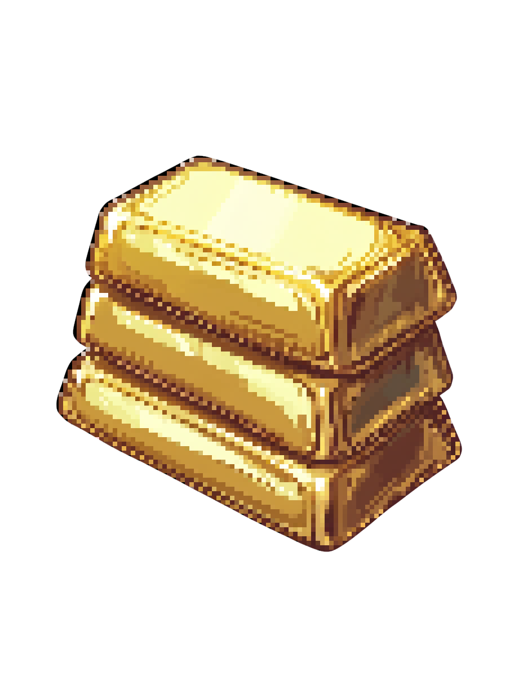
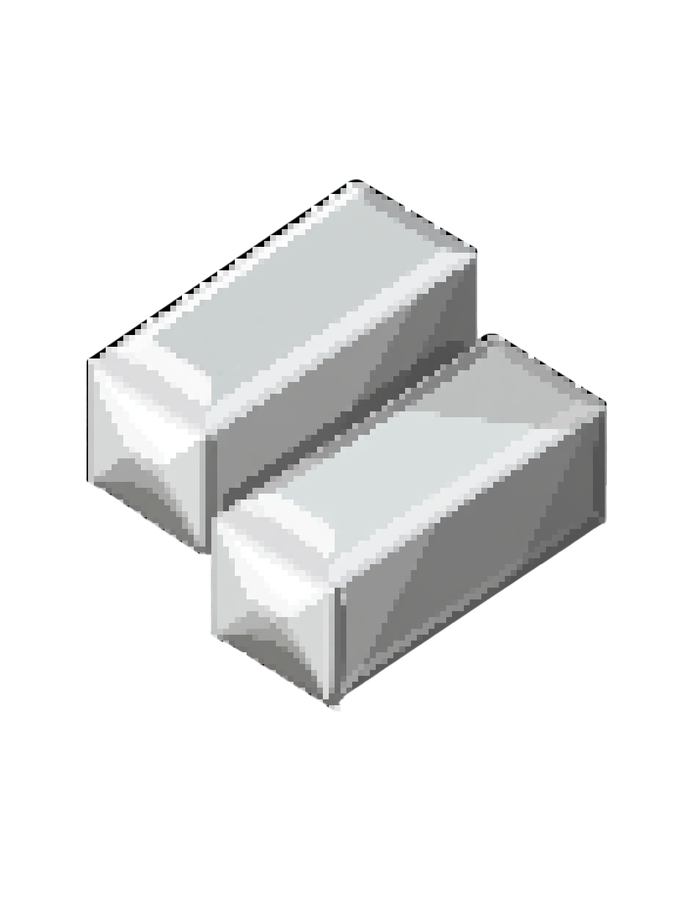
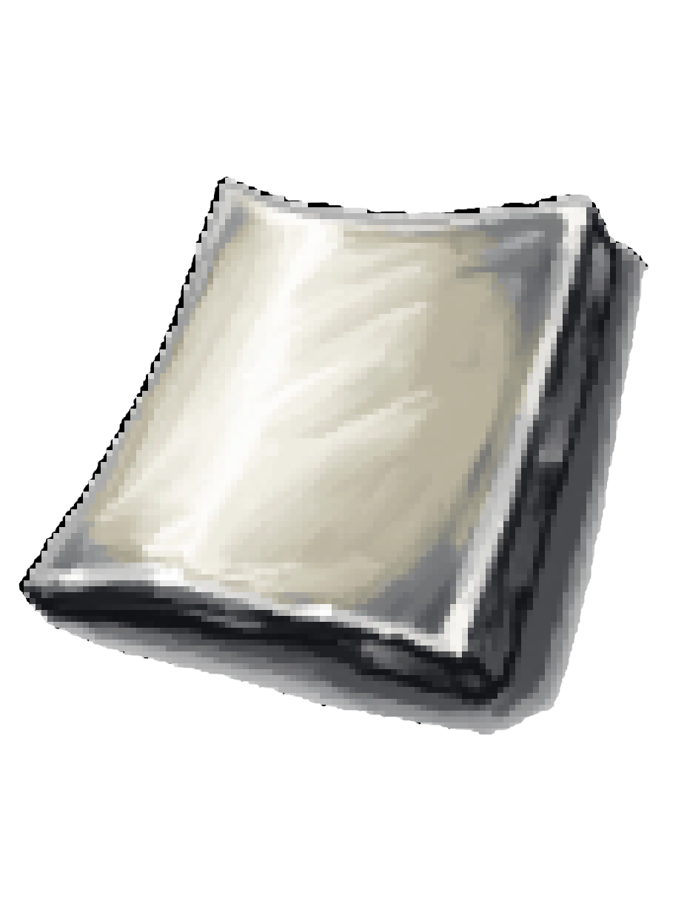

Welcome to the whitepaper for Idle City Heroes – an innovative pixelated idle game that fuses retro aesthetics with modern strategic gameplay. Immerse yourself in a universe where every pixel tells a story and every resource fuels the growth of your empire.
Our game is designed to not only challenge your strategic thinking but also offer endless customization options for your hero, empowering you to tailor your gameplay experience uniquely.
Unique to our game is the seamless integration of simulation and RPG MMO elements. Experience the thrill of building your city's resources while simultaneously developing your hero’s skills in a living, dynamic world where every decision shapes both your empire and your character.
Game Mechanics
The core gameplay revolves around resource collection, management, and strategic upgrades. Build and manage infrastructures like mines and mills to extract and process various resources. Key mechanics include:
Resource Accumulation: Harvest a wide variety of resources including Diamond, Gold, Silver, Bronze, Iron, Steel, Wood, Stone, Water, Food, and Utility.
Upgrade Systems: Enhance your production facilities to unlock higher production rates and advanced capabilities.
Strategic Investments: Allocate resources to secure unique upgrades, unlock secret features, and further boost production.
Dynamic Challenges: Adapt to random in-game events and market fluctuations that impact resource values and production efficiency.
Dual Progression: Enjoy a unique fusion of simulation and RPG MMO gameplay, where you build your resources and evolve your character concurrently.
Every decision—from which resource to invest in to the timing of your upgrades—adds complexity, ensuring a rich and engaging gameplay experience.
Technology
Built using modern JavaScript, HTML, and the Expo framework, Idle City Heroes delivers smooth performance across platforms. The game’s retro look is powered by:
The iconic 'Press Start 2P' pixel font.
CSS techniques that maintain a crisp, pixelated aesthetic.
Optimized resource rendering for visually engaging gameplay.
These technologies converge to create an immersive experience that bridges the gap between nostalgic design and modern gaming.
In-Game Economy
At the heart of Idle City Heroes lies a meticulously crafted economy. The in-game market fluctuates based on supply, demand, and player decisions, making every resource a cornerstone of your strategy.
Resource Types: Each resource—from Diamond to Population—is essential for different upgrades, trades, and production chains.
Market Dynamics: Prices adjust with production levels and in-game events, requiring you to constantly refine your strategy.
Upgrade Paths: Smart investments unlock new branches of development and exponential growth opportunities.
Deep Dive: Resource Complexity & Infinite Possibilities
The intricate network of resources in Idle City Heroes is designed to offer infinite possibilities for hero customization. Every resource is a building block not only for constructing your empire but also for customizing your hero’s arsenal.
Diamond
Unlocks high-tier upgrades and rare customization options.

Gold
Crucial for purchasing premium weapons and gear enhancements.

Silver
Used in crafting versatile equipment and augmenting hero abilities.
Bronze
Essential for building a robust base of custom modifications.

Iron
Key for forging durable weapons and heavy armor upgrades.
Infinite Possibilities: Mastering the interplay of resources not only boosts your empire’s growth but also unlocks an expansive range of hero customization. Equip your hero with an array of weapons, armor, and unique items—each upgrade and combination opens up new tactical strategies. Whether you favor brute strength, agile combat, or magical enhancements, the choices you make will continuously redefine your gameplay experience.
Roadmap
Our vision for Idle City Heroes is centered on continuous innovation and expansion:
Short-Term: Refine core mechanics, improve user interface feedback, and expand the in-game economy.
Mid-Term: Introduce additional resource types, dynamic events, and deeper customization options for heroes.
Long-Term: Harness infinite possibilities for infinite capabilities—continuously expanding the game universe with boundless multiplayer innovations, endless customization options, and ever-evolving narrative pathways that further integrate simulation elements with RPG progression.
Long-Term Vision & Unique Features
Our long-term vision is to deliver a game where infinite possibilities meet infinite capabilities—a game that grows and evolves with its community through continuous updates, immersive simulation, and dynamic RPG progression.
A key aspect of our future is the integration of the upcoming token $Hero, which will play a pivotal role in our in-game economy. The utilities and capabilities of $Hero include:
Hero Capsule Purchases: $Hero will be primarily required to buy and purchase Hero Capsules, essential items for character progression and customization.
Phoenix Treasure Chest: Use $Hero to unlock exclusive Phoenix Treasure Chests, offering rare items and bonuses.
Marketplace Currency: $Hero serves as a versatile currency in our Marketplace, enabling players to buy various resources to fuel their empire’s growth.
Resource Building Boost: Temporarily speed up any resource building by using $Hero as a booster currency, ensuring rapid expansion during critical gameplay moments.
By integrating $Hero into every facet of the game, we aim to create an economy that not only supports but enhances the dynamic interplay between empire building and hero development.